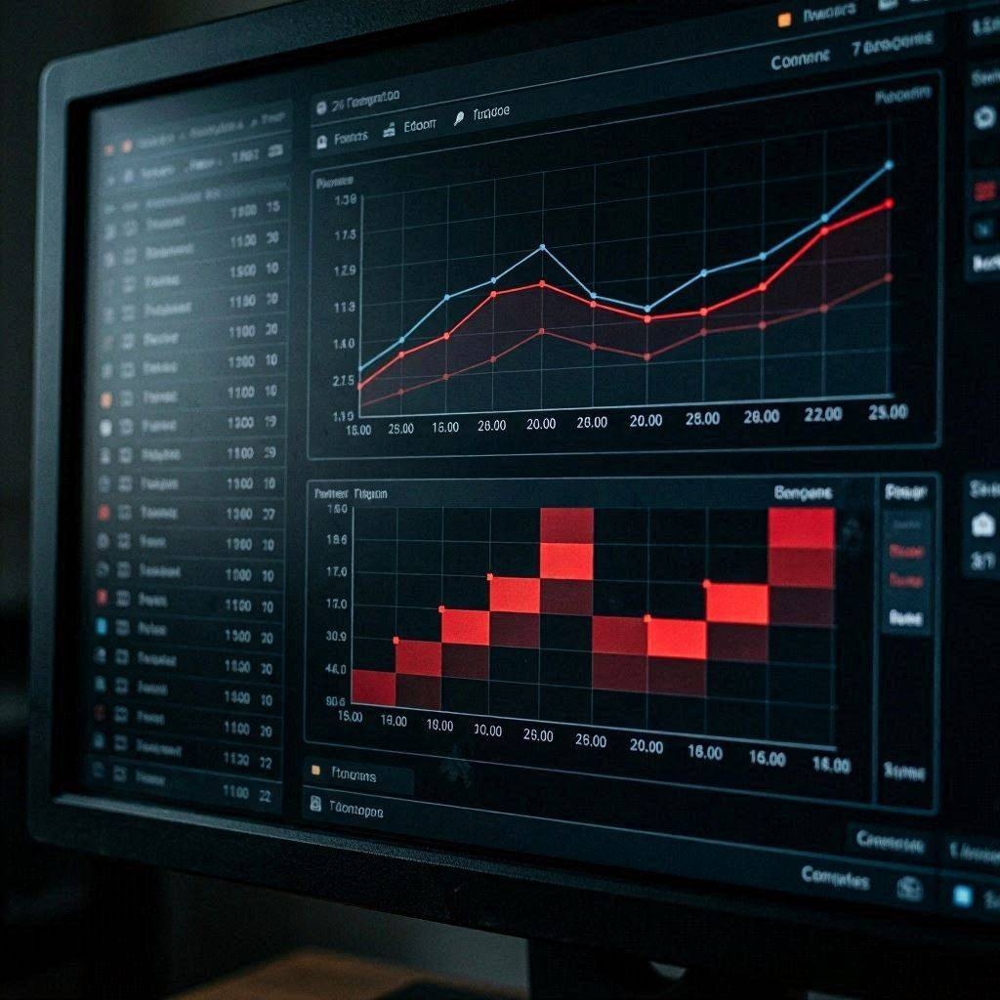
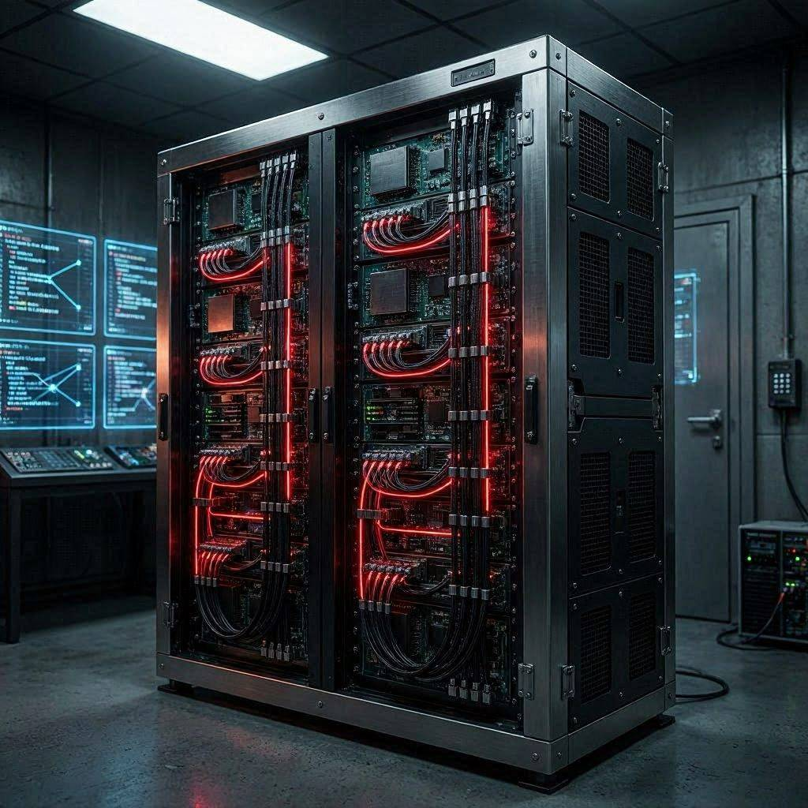
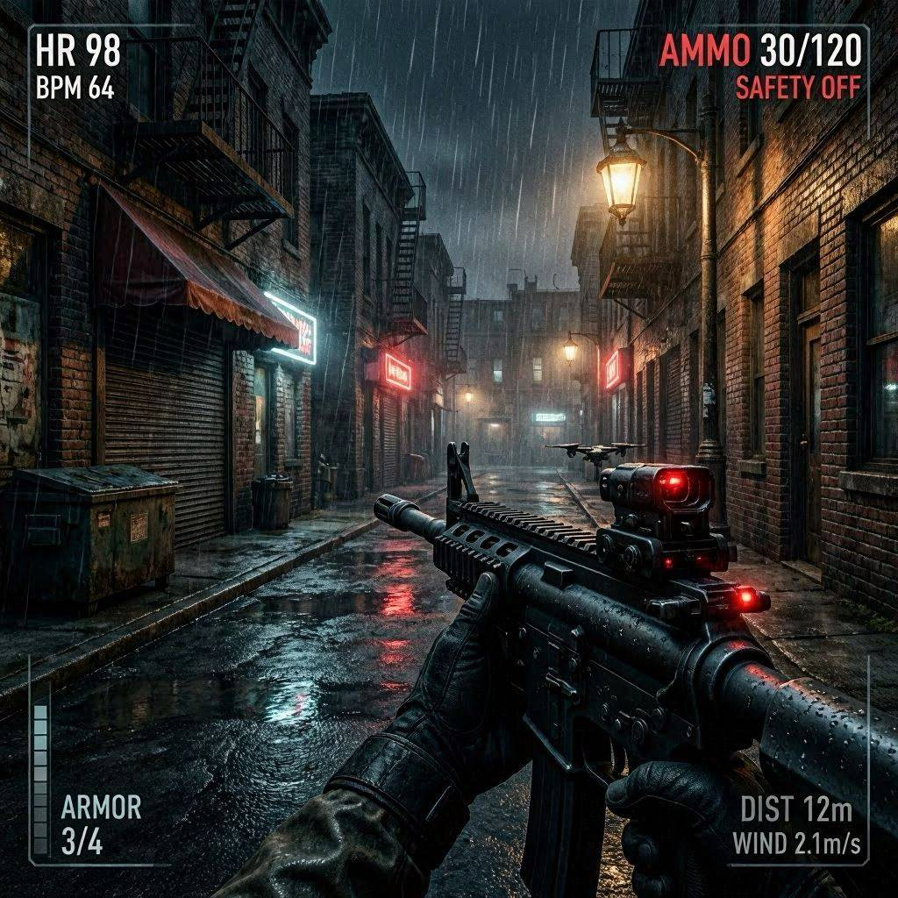

Dirección General | S. Torres
Indie Sign es un ecosistema de desarrollo tecnológico especializado en la creación de arquitecturas de software de alta fidelidad. Diseñamos soluciones complejas que van desde la conceptualización de interfaces operativas hasta la programación de simuladores tácticos (MILSIM) y entornos virtuales, garantizando un rendimiento sin latencia para operaciones críticas.

División especializada en UI/UX y diseño de identidad. Aplicamos principios de psicología visual para desarrollar interfaces humanas e intuitivas que reducen drásticamente la fatiga cognitiva del operador.

Rama enfocada en el desarrollo ágil, innovación de entornos dinámicos y la integración de arquitecturas escalables. Optimizamos los procesos de ingeniería para despliegues tecnológicos rápidos y seguros.

Unidad de simulación táctica. Encargada de la programación de motores físicos, integración de balística realista y creación de escenarios para entrenamiento en toma de decisiones bajo presión.
Establezca comunicación directa con la Dirección General.
Solicitar Enlace